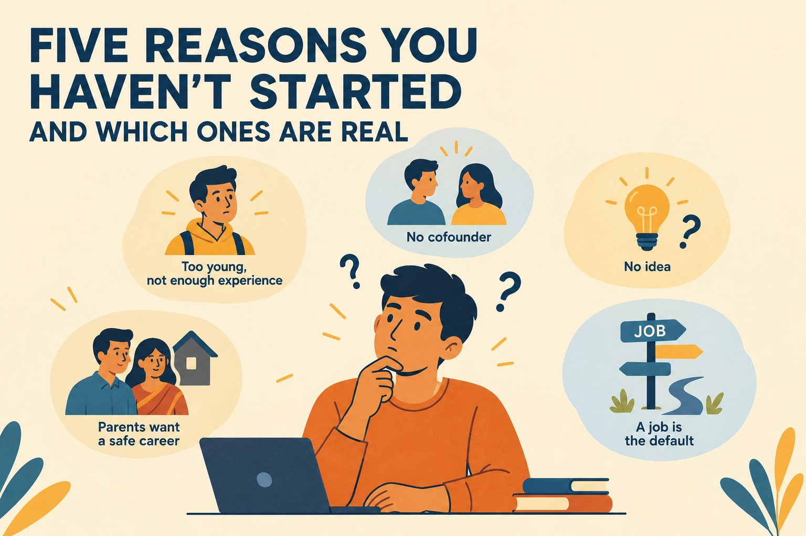

Five Reasons You Haven't Started (and Which Ones Are Real)
EIC MBM
Published on October 05, 2026

"Nobody in that story had a perfect plan. They kept moving."
In spring 2005, two University of Virginia seniors, Steve Huffman and Alexis Ohanian, drove to Boston to hear Paul Graham speak. They pitched him a food-ordering-by-SMS idea called My Mobile Menu. Graham rejected the idea, but invited them back to Boston to work on something else. That something became Reddit, which they launched in June 2005 after building the first version in roughly three weeks.
Nobody in that story had a perfect plan. They kept moving.
Paul Graham wrote a famous 2007 essay, "Why to Not Not Start a Startup," that breaks down the reasons people hesitate and argues that most are bogus. As a student, the parts that matter most are the ones you face when you're just starting out.
1. "I'm too young, and I know too little"
Graham's answer is more nuanced than a simple "age doesn't matter." He maintains that there is a threshold marking the transition to adulthood, but that each person crosses it at a different age. One possesses the maturity needed to found a startup once that threshold has been crossed, regardless of one's age.
How can you tell? Graham proposes two tests. First, do you still have the "childhood abandonment reflex"—that is, the instinct to say "I can't do it" when things get complicated? Second, how do you react when someone challenges you? If someone says, "That's a stupid idea," a child tends to either submit or rebel; an adult, on the other hand, asks, "Really? Why do you say that?"
For Graham, that is the true test of maturity: it is not about how many years you have lived, but about whether you are capable of taking responsibility in difficult situations and responding to criticism without falling apart or becoming defensive.
Verdict: mostly bogus.
2. "I don't have a cofounder"
This one is real.
Graham says a startup is too much for one person to bear, and that investors are more likely to fund founders who have a cofounder.
The good news is that college is one of the better places to find one. But you can't judge a potential cofounder just by talking to them. Graham's own advice is that you need to work with someone to know whether you actually want them as a cofounder.
So, before you call it a startup, build a small project with someone and see how you work together.
Verdict: real, but fixable right now.
3. "I don't have an idea"
Graham guessed that in the average YC startup, about 70% of the idea would change within the first three months.
Instagram is a prime example of why an initial idea doesn't necessarily have to remain intact. Kevin Systrom and Mike Krieger spent nearly a year working on Burbn. It was a location-based mobile app and before narrowing it down to its strongest feature: photo sharing. Instagram emerged from that process and was developed in about eight weeks following the decision to start from scratch.
Graham's recipe for ideas is simpler: find something missing in your own life and fix it, no matter how small or specific it may seem.
Verdict: mostly bogus. Start with a problem, not a perfect idea.
4. "My parents want me to have a safe career"
Graham doesn't say to ignore them. He says to understand what they're actually asking for.
In his example, parents may push someone toward a prestigious, stable career because they want security for their child. His advice is to treat their concerns like feature requests: figure out the underlying need, then ask whether there's a better way to satisfy it.
So don't turn this into a fight about whether your parents "understand startups."
Ask what they're actually afraid of.
Sometimes, they simply want to see their child settle down. But we can take calculated risks early in life.
Verdict: real. Talk to them, don't fight them.
5. "A job is the default"
This may be the strongest reason and the least consciously examined.
Default options work because we do not choose them consciously. Graham maintains that, for most people, getting a conventional job becomes the automatic answer to the question: "How should I earn money?" He also argues that the tradition of regarding employment as the default option is, historically, much more recent than it appears.
The important question is:
Did you choose a job, or did you simply follow the path that was already laid out for you?
Before accepting the default option, at least make it a choice of your own.
Verdict: the option that requires the most reflection.
Take This with Salt
Graham wrote this in 2007 about American founders, based on an initial batch of eight startups. It is a very small sample, and he himself runs the program being analyzed. Take it as the opinion of an experienced person, not as definitive proof.
Consider it a framework for distinguishing real limitations from those fears that are merely perceived as limitations.
This Week
Choose a fear from this list and put it to the test with a small action.